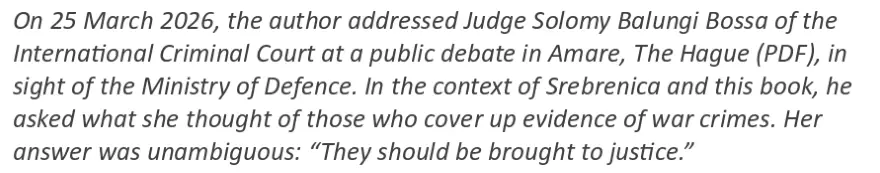

Prueba · Correo electrónico
Giltay a la Corte Penal Internacional, 26 y 31 de marzo de 2026
El pasaje
«El 25 de marzo de 2026, el autor se dirigió a la jueza Solomy Balungi Bossa, de la Corte Penal Internacional, en un debate público en Amare, La Haya (PDF), a la vista del edificio del Ministerio de Defensa. En el contexto de Srebrenica y de este libro, le preguntó qué pensaba de quienes encubren pruebas de crímenes de guerra. Su respuesta fue inequívoca: “Deberían ser llevados ante la justicia”». Página 2, de la nota adjunta. Es el párrafo que Giltay presentó a la Corte en su correo electrónico del 26 de marzo de 2026 (página 1). Traducido del inglés; el texto original figura a continuación.
Texto original
“On 25 March 2026, the author addressed Judge Solomy Balungi Bossa of the International Criminal Court at a public debate in Amare, The Hague (PDF), in sight of the Ministry of Defence. In the context of Srebrenica and this book, he asked what she thought of those who cover up evidence of war crimes. Her answer was unambiguous: ‘They should be brought to justice.’” Los correos electrónicos y la nota están escritos en inglés.

Por qué importa este documento
En el debate público celebrado en Amare, La Haya, a la vista del edificio del Ministerio de Defensa, Giltay preguntó a la jueza ugandesa Solomy Balungi Bossa, de la Corte Penal Internacional, qué pensaba de quienes encubren pruebas de crímenes de guerra. Bossa forma parte de los cinco jueces de la Sala de Apelaciones, la sala jurisdiccional de más alto rango de la Corte. Según el párrafo que él presentó a la Corte, ella respondió que quienes lo hacen deberían ser llevados ante la justicia. Antes de publicar ese intercambio, Giltay escribió dos veces a la Corte por correo electrónico, el 26 y el 31 de marzo de 2026, para pedirle que transmitiera el párrafo a la jueza y la invitara a responder o a formular objeciones. Hasta el 14 de abril de 2026, según consta en el documento, no se había recibido respuesta ni de la jueza Bossa ni de la Corte.
Procedencia
- Documento
- Dos correos electrónicos impresos desde Gmail, seguidos de una nota adjunta, dos páginas
- Remitente
- Edwin Giltay
- Destinatario
- Corte Penal Internacional, information@icc-cpi.int
- Fecha
- 26 de marzo de 2026, 13:24, y 31 de marzo de 2026, 15:14
- Asunto
- «Request to forward message to Judge Solomy Balungi Bossa» (solicitud de reenvío del mensaje a la jueza Solomy Balungi Bossa)
- Destinado a
- La jueza Solomy Balungi Bossa, Corte Penal Internacional
- Sala de Apelaciones
- La jueza Bossa está adscrita a la Sala de Apelaciones, según su perfil en www.
icc-cpi. ; esa sala está compuesta por cinco jueces, según www.int/ judges/ judge-solomy-balungi-bossa icc-cpi. int/ about/ judicial-divisions - Contexto
- Debate público en Amare, La Haya, 25 de marzo de 2026
- Referencias
- ECLI:NL:GHDHA:2016:870; caso de las Madres de Srebrenica contra el Estado neerlandés, escrito de agravios, página 23
- Respuesta
- Ninguna, ni de la jueza Bossa ni de la Corte, hasta el 14 de abril de 2026, fecha en que se imprimió el documento; tampoco ha llegado respuesta alguna hasta noviembre de 2026
- Idioma
- Inglés
Citado en:
- el ensayo «La prohibición cayó, el libro quedó en pie» en el capítulo (12) «No queda otra opción»
- la sección de voces bajo el epígrafe «Reconocimientos coincidentes».
Documento: https://
Modificado por última vez el 13 de septiembre de 2026, consultado el 27 de noviembre de 2026.

Esta página es una ficha de prueba del libro El general del encubrimiento de Edwin Giltay y del sitio web que lo acompaña.